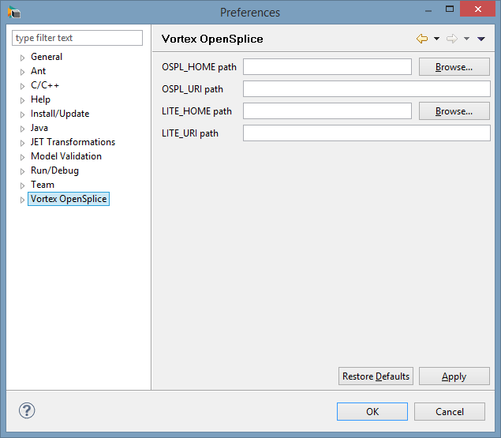
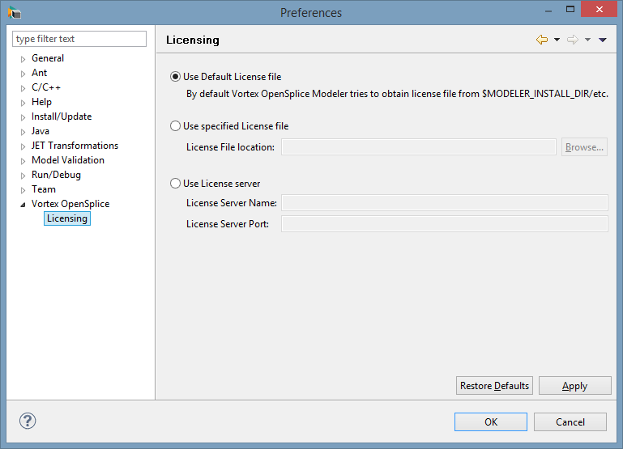

3. Installation¶
3.1. General Installation Instructions¶
Follow the steps shown below to install the Vortex OpenSplice Modeler.
Step 1: Prerequisites
Ensure that Java Version 6 (required) and the OpenSplice Host Development Environment [1] (recommended), plus any other supporting software (such as native compilers, for example), are installed and working.
The prerequisites for C++ Code Generation are given in the Release Notes included with your Modeler product distribution.
The Release Notes can be viewed by opening index.html located in the root (or base) directory of your OpenSplice installation and following the Release Notes link.
Step 2: Run the Vortex OpenSplice Modeler installer

On Unix-based platforms (including Linux), run from the command line:
VortexOpenSpliceModeler-<version>-<platform>-installer.binwhere <version> is the release version number and <platform> is the build for your platform. Ensure that the execute permission is enabled first, then follow the on-screen instructions. For example:
% chmod u+x VortexOpenSpliceModeler-2.5.12-linux-installer.bin % ./VortexOpenSpliceModeler-2.5.12-linux-installer.bin
On Windows-based platforms, run by double-clicking on the filename in Windows Explorer:
VortexOpenSpliceModeler-<version>-windows-installer.exewhere <version> is the release version number, then follow the on-screen instructions. For example:
> VortexOpenSpliceModeler-2.5.12-windows-installer.exe
Step 3: Install the license file
A license file must be obtained from PrismTech, then copied to the eclipse or eclipse/etc subdirectories where the Vortex OpenSplice Modeler has been installed, or copied to the PrismTech/Vortex_v2/license directory, or have the prismtech_LICENSE environment variable defined with the file path to the license file.
For example:
/home/myHomeDir/PrismTech/Vortex_v2/Tools/VortexModeler/2.5.12/eclipse/etc
\PrismTech\Vortex_v2\Tools\VortexModeler\2.5.12\eclipseFor more information about licensing, please refer to the Getting Started Guide.
3.2. Setting OpenSplice Preferences¶
After installing the Vortex OpenSplice Modeler it is necessary to specify the location of the OpenSplice DDS installation to be used.
Step 1: Start the Vortex OpenSplice Modeler.
Step 2: Choose Window > Preferences.
Step 3: Select OpenSplice.
Step 4: Add the location of the OpenSplice DDS installation to OSPL_HOME.
In the OSPL_HOME path field enter (for example)
/home/apps/PrismTech/Vortex_v2/Device/VortexOpenSplice/6.6.0p1/HDE/x86_64.linuxThe Browse button can be used to navigate through your file system to point to the installation.
You can also set the OSPL_URI path if this is different from the default location.
Step 5: If you are modelling DDS applications for Vortex Lite:
Set the LITE_HOME path field, e.g.
/home/apps/PrismTech/Device/VortexLite/2.0.0As before, you can set the LITE_URI path to a Vortex Lite configuration file if required.
The OpenSplice Preferences
The license location can also be specified using the Licensing Preferences page, which is below the OpenSplice Preferences page described above.
{kind=link}
OpenSplice licensing
{kind=link}
3.3. Uninstallation Instructions¶
The uninstaller cleans the Vortex OpenSplice Modeler install directory by removing any file created during the installation process.
Files created by users (such as project files in the workspace directory) are not removed by the uninstaller so that users do not lose their work.
A normal uninstallation typically removes all folders except for the eclipse folder (with the workspace, p2, plugins and configuration sub-folders).
Follow the steps below to uninstall the Vortex OpenSplice Modeler.
Step 1: Navigate to the uninstall folder of your Vortex OpenSplice Modeler installation.
On Unix-based platforms (including Linux), the default path will be:
/home/myHomeDir/PrismTech/Vortex_v2/Tools/VortexModeler/<version>/uninstallwhere <version> is the release version number.
On Windows-based platforms, the default path will be:
\PrismTech\Vortex_v2\Tools\VortexModeler\<version>\uninstallwhere <version> is the release version number.
Step 2: Run the Vortex OpenSplice Modeler uninstaller.
On Unix-based platforms (including Linux), run from the command line:
uninstall-Vortex OpenSplice Modeler <version>where <version> is the release version number, then follow the on-screen instructions. For example:
% ./uninstall-Vortex\ OpenSplice\ Modeler\ V2.5.12
On Windows-based platforms, run by double-clicking on the filename in Windows Explorer:
uninstall-Vortex OpenSplice Modeler <version>.exewhere <version> is the release version number, then follow the on-screen instructions. For example:
> uninstall-Vortex OpenSplice Modeler V2.5.12.exeOn Windows, if certain files are still in use by a process (or by the operating system), the uninstaller will skip them but prompt you to restart your machine. Restarting the machine removes locks on the files and ensures that the uninstaller processes them.

Note: To install a new version of Vortex OpenSplice Modeler on top of an existing one, it is recommended that you uninstall the current version first. Because the uninstaller leaves the workspace folder untouched, installing a new version of Modeler should be seamless and you should be able to continue working with your existing projects.
Footnotes
| [1] | The Host Development Environment (HDE) generates DCPS typed interfaces: generated application code will not compile without the HDE. |